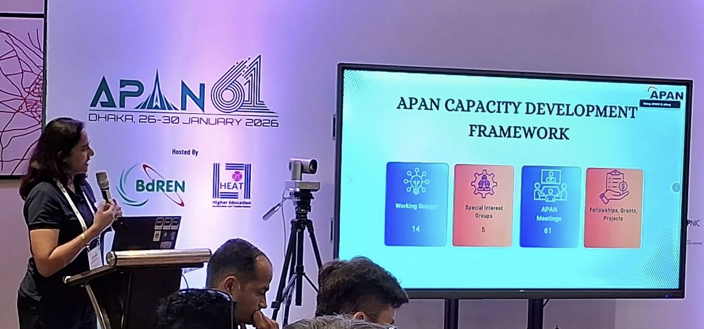
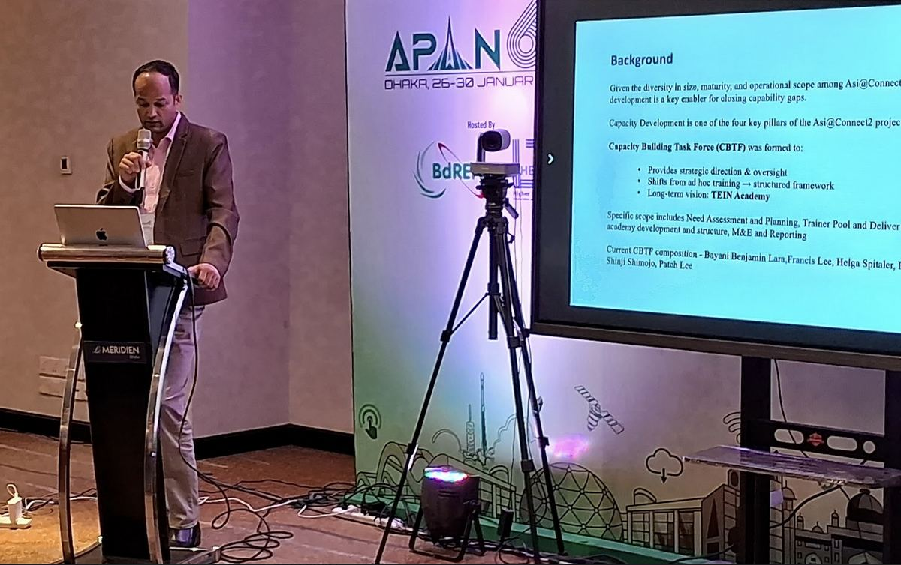
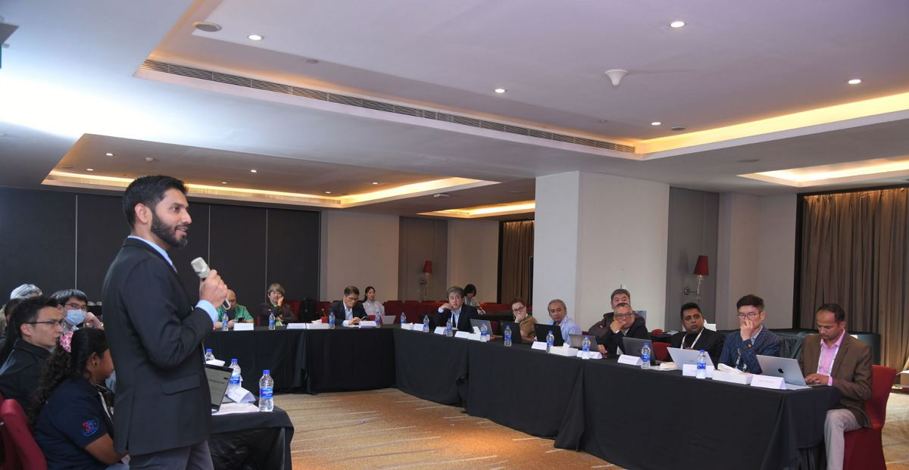
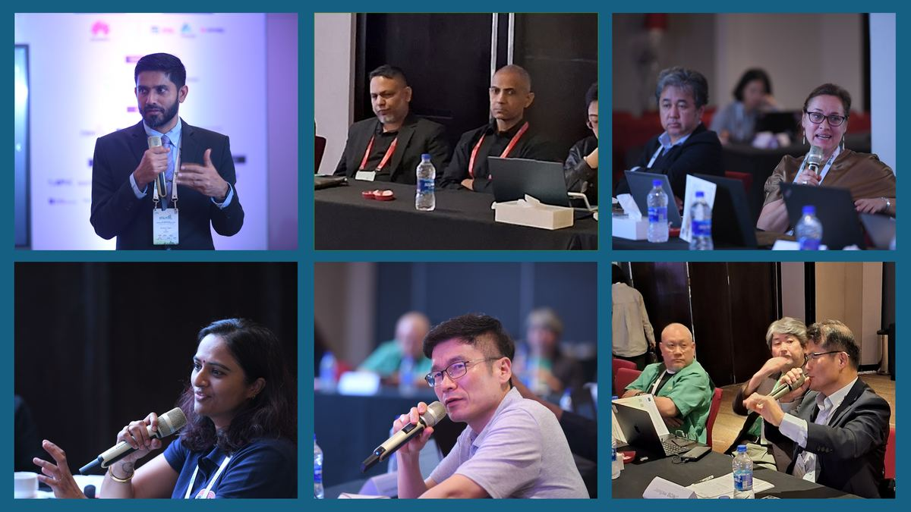

Advancing Regional Capacity: Highlights from the APAN/Asi@Connect Leaders Forum at APAN61.
The 6th APAN/Asi@Connect Leaders Forum (AALF), held alongside APAN61 in Dhaka, marked a significant milestone in the continued evolution of regional capacity development efforts across the Asia-Pacific. The transition from the Asia Pacific Advanced Network (APAN) NREN Leaders Forum to the APAN/Asi@Connect Leaders Forum reflects a deeper alignment between APAN and the Asi@Connect programme, strengthening coordination and long-term vision for sustainable impact.
Supported by TEIN*CC under the Asi@Connect project and APAN, the Forum convened leaders from National Research and Education Networks (NRENs), APAN, and regional partners to review progress, examine emerging priorities, and shape a more structured approach for the next phase of regional collaboration.
The Forum opened with a presentation by Liana Jacinta, APAN's General Manager, who outlined APAN's evolving vision for capacity development. Her presentation emphasised that the region is moving "from infrastructure to impact." While networks and data centres remain foundational, the real value of APAN lies in strengthening people and collaboration. Working Groups, Special Interest Groups, fellowships, mentorship initiatives, and research conferences were highlighted as mechanisms for long-term engagement rather than isolated activities.

The APAN framework demonstrates how capacity development is embedded within the broader APAN ecosystem, enabling mentorship, peer learning, and leadership development through sustained participation in technical and thematic communities. The message was clear: technical training must be integrated with community-building and leadership pathways to generate measurable regional impact.
Building on this vision, Rajan Parajuli, Executive Director of NREN (Nepal Research and Education Network) and Chair of the Capacity Building Task Force of the Asi@Connect project, presented the Asi@Connect Capacity Development Approach under Project Phase 2. He shared insights from regional consultations indicating strong demand for cybersecurity, cloud infrastructure, federated identity services, artificial intelligence, and high-performance computing, while also emphasising the need to strengthen organisational capacities — including governance, sustainability planning, financial management, and leadership development.

The Phase 2 approach aims to ensure that capacity development is strategic, measurable, and sustainable, rather than reactive.
The discussions that followed reflected realities across the Asia-Pacific region. Many NRENs face similar challenges, including limited training budgets, operational pressures, and uneven access to specialised expertise. Leaders explored collaborative solutions, including train-the-trainer models, blended and online learning formats, mentoring arrangements, and enhanced coordination between mature and emerging networks. There was strong agreement that capacity building must balance technical excellence with organisational resilience — the Forum reinforced that strengthening leadership and governance is as important as strengthening network infrastructure.

A defining characteristic of the APAN/Asi@Connect Leaders Forum is its emphasis on ecosystem-based collaboration. Leaders recognised that sustainable capacity development requires partnerships across regional and global NRENs, universities, research institutions, government and private stakeholders, and specialised technical communities. With the continued support of APAN and TEIN*CC under the Asi@Connect project, AALF provides a structured platform to align training priorities, foster regional solidarity, and expand inclusive participation across the Asia-Pacific.

The discussions in Dhaka demonstrated a maturing regional approach to capacity development. The evolution into the APAN/Asi@Connect Leaders Forum reflects a commitment to structured planning, coordinated implementation, and long-term impact measurement. As emerging technologies and evolving research demands reshape the digital landscape, the Asia-Pacific NREN community continues to position itself not only as an infrastructure provider but as a catalyst for sustainable growth, leadership development, and regional collaboration.
Open the original PDF ↗